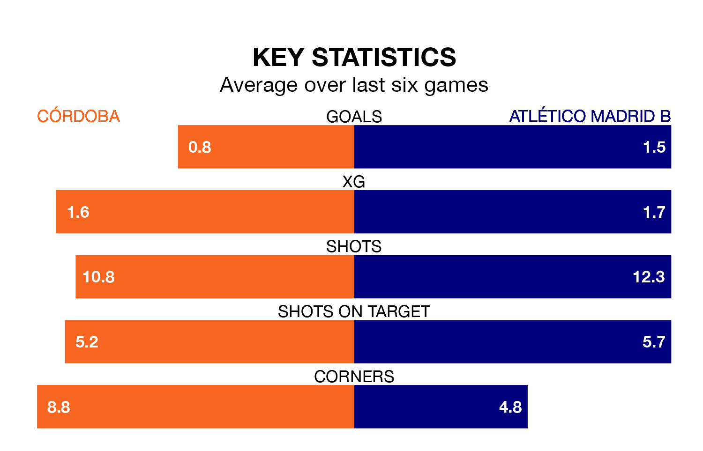

Sunday's late match between Córdoba and Atlético Madrid B promises to be one for the neutrals, as two of Primera Division RFEF Group 2's most free-scoring sides go head-to-head.
Ahead of the game at the Estadio Nuevo Arcángel, Córdoba and Atlético Madrid B sit third and fourth in the goal-scoring charts, with 34 and 32 goals respectively.
Enrique Márquez Climent and Antonio Manuel Casas Marín lead the way for the home side, having bagged one goal each in their 21 games to date.
And Abdellah Raihani Ennaou and Diego Vicente Bri Carrazoni have been the main men in the opponents' penalty box for Atlético Madrid B, with one goal each.
Córdoba are fourth in the table after 21 games, of which they have won 11 and drawn five, earning 38 points.
Atlético Madrid B are nine places behind the home side in 13th, with six wins and eight draws putting them on 26 points.
Córdoba are in mixed form in Primera Division RFEF Group 2, with two wins and three draws from their last six games.
And also with two wins and three draws over that period, the visitors' form is identical – they have both taken nine points from 18.
Córdoba's last match was on January 27, a 0-0 draw against Real Murcia.
Atlético Madrid B drew 0-0 with Mérida AD last time out, on January 28.
Updated: 15:45 (UTC), 02/02/24